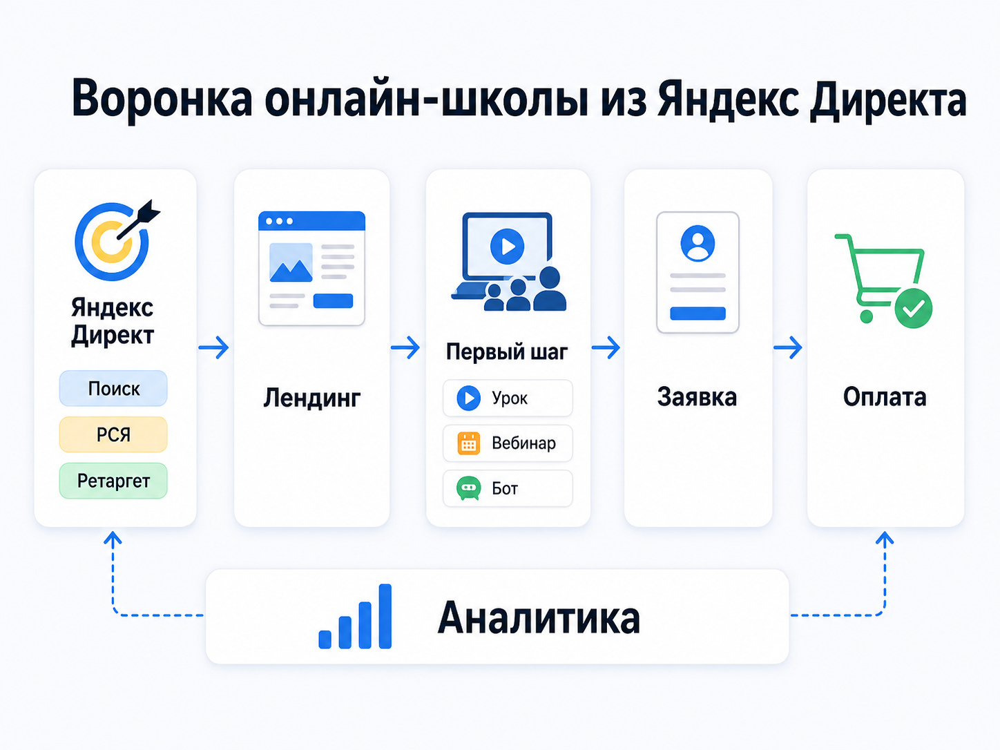
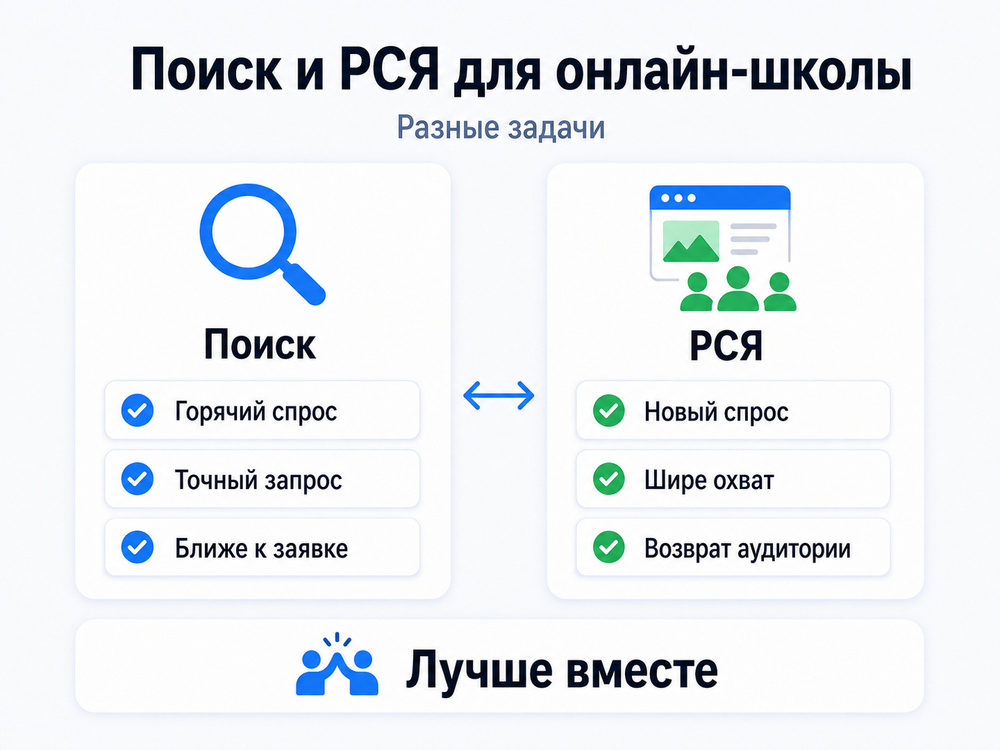
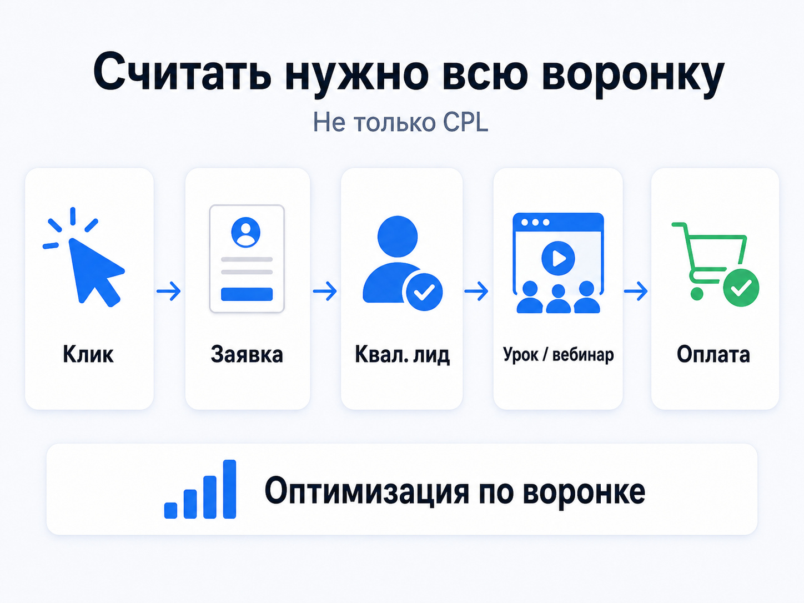

Блог о платном трафике
Яндекс Директ для онлайн-школы: как получать заявки на обучение
Яндекс Директ для онлайн-школы может приводить заявки на курсы, пробные уроки, вебинары и другие этапы образовательной воронки. Но результат зависит не столько от количества настроек в рекламном кабинете, сколько от всей связки: продукт - аудитория - объявление - посадочная страница - заявка - продажа.
В образовательных проектах особенно легко получить много дешевых регистраций, которые потом почти не превращаются в оплаты. Поэтому я оцениваю рекламу не только по CPL или CPA внутри Директа. Нужно смотреть, какие заявки доходят до менеджеров, посещают урок или вебинар и в итоге покупают обучение.
На практике Яндекс Директ работает и для массового онлайн-образования, и для достаточно узких курсов. В моих проектах через него продвигались фотошкола, обучение массажу, йога, профессиональные курсы цигун, обучение Васту и другие образовательные продукты.
Когда Яндекс Директ подходит онлайн-школе
Главное преимущество Директа - возможность работать с уже существующим спросом.
Человек сам вводит в поиск:
- курсы английского языка онлайн;
- обучение интернет-маркетингу;
- подготовка к ЕГЭ по математике;
- курсы массажа;
- обучение фотографии;
- курсы программирования для детей.
Такой пользователь уже рассматривает обучение и находится значительно ближе к заявке, чем аудитория, которой образовательный продукт впервые показали в рекламной ленте.
Кроме Поиска, онлайн-школа может использовать Рекламную сеть Яндекса. В РСЯ реклама показывается на сайтах, в приложениях и сервисах аудитории, которую система считает подходящей. Подробнее принцип работы этих двух сред я разбирал в статье:
https://naklikay.ru/blog/kak-rabotaet-yandex-direct/
Директ особенно уместен, когда:
- у направления уже существует поисковый спрос;
- школа запускает очередной набор;
- нужно увеличить объем заявок на работающий продукт;
- есть бесплатный урок, консультация, тестирование или другой первый шаг;
- используется вебинарная или автоворонка;
- нужно вернуть посетителей, которые уже знакомы со школой;
- школа готова отслеживать не только регистрации, но и качество лидов.
Сложнее ситуация с новым продуктом, который аудитория пока не умеет искать. Тогда одного горячего поискового спроса может оказаться мало, и заметную роль начинают играть РСЯ, контент и другие каналы привлечения.
Какую воронку рекламировать

Одна из главных ошибок - сразу вести любого пользователя на страницу с предложением купить дорогой курс.
Для одних направлений это работает, для других нужен промежуточный шаг. Поэтому сначала я определяю, какое действие реально можно получить от холодного или теплого посетителя.
Продажа курса напрямую
Подходит, если продукт понятный, относительно простой для выбора и пользователь уже ищет именно такое обучение.
На странице должны сразу отвечать на основные вопросы:
- чему научат;
- кому подходит программа;
- кто преподает;
- сколько длится обучение;
- в каком формате проходят занятия;
- сколько стоит курс;
- какой результат получает ученик.
Чем выше стоимость и сложнее продукт, тем труднее рассчитывать на мгновенную оплату после первого рекламного перехода.
Бесплатный урок или другое пробное действие
Человеку проще сначала познакомиться с преподавателем и форматом, а уже затем решать вопрос об оплате.
Например, в моем кейсе продвижения курса по йоге Сурья Намаскар рекламный трафик направлялся на бесплатный урок. В результате было получено более 400 лидов по 96 рублей при KPI до 300 рублей за лид.
https://naklikay.ru/cases/master-campaign-online-education-yandex-direct/
Это хороший пример того, что рекламировать можно не сам курс, а понятный первый шаг в воронке.
Вебинар или эфир
Для образовательного продукта с большим количеством вопросов вебинар позволяет сначала показать эксперта и методику, а затем предлагать основную программу.
Такая модель использовалась, например, в воронке для обучения кондитеров. Стоимость регистрации в рекламных кампаниях находилась примерно в диапазоне 31-68 рублей.
https://naklikay.ru/cases/confectioner-webinar-funnel-yandex-direct/
При этом дешевую регистрацию нельзя автоматически считать хорошим результатом. Следующий вопрос - сколько людей действительно пришли на эфир и сколько из них в итоге купили обучение.
Telegram-бот или автоворонка
Еще один вариант - вести пользователя не непосредственно на продажу, а в последовательную воронку с контентом.
Такой подход использовался в моем кейсе продвижения обучения Васту через Telegram-бот.
https://naklikay.ru/cases/vastu-bot-launch-yandex-direct/
Для онлайн-школ это особенно интересно, когда решение о покупке принимается не сразу и человеку нужно несколько контактов с экспертом или продуктом.
Поиск или РСЯ для онлайн-школы

У этих инструментов разные задачи.
Поиск
На Поиске я в первую очередь работаю с запросами, в которых виден коммерческий интерес:
- курсы + направление;
- обучение + профессия;
- онлайн-школа + предмет;
- подготовка + экзамен;
- занятия с преподавателем;
- курсы для начинающих;
- обучение с нуля.
Семантику нужно разделять по смыслу, а не складывать сотни разных запросов в одну группу.
Запросы «курсы фотографии», «школа фотографии онлайн» и «как научиться фотографировать» описывают похожую тему, но намерение пользователя у них разное.
Отдельно нужно следить за информационным и нерелевантным трафиком: бесплатными материалами, вакансиями, рефератами, торрентами и другими запросами, которые не соответствуют продукту.
РСЯ
РСЯ обычно дает больше возможностей для масштабирования и работы с аудиторией, которая еще не сформулировала конкретный поисковый запрос.
Здесь особую роль играют:
- изображение;
- заголовок;
- понятный результат обучения;
- предложение первого шага;
- соответствие креатива конкретной аудитории.
Для школы английского языка, курсов программирования для детей и профессиональной переподготовки нельзя делать одно универсальное объявление. Даже внутри одного продукта имеет смысл разделять аудитории с разными мотивами.
В актуальном Яндекс Директе для профессионального управления рекламой используется Единая перфоманс-кампания. В ней можно управлять показами на Поиске, в РСЯ и других доступных местах размещения, а таргетинги задаются на уровне групп.
Как я строю структуру рекламы онлайн-школы
Структура зависит от ассортимента и объема трафика, но основной принцип один: разные задачи должны оставаться различимыми в статистике.
Если школа продает пять направлений, я не стал бы автоматически рекламировать их одной общей кампанией.
Разделять имеет смысл:
- разные курсы;
- разные целевые аудитории;
- разные посадочные страницы;
- разные этапы воронки;
- Поиск и РСЯ, когда такое разделение необходимо для управления;
- регионы с заметно разной экономикой;
- брендовый и общий спрос.
Особенно критична сегментация в детском образовании.
Пользователем курса может быть ребенок, но решение о покупке принимает родитель. Объявление «научись программировать» и предложение «курс программирования для ребенка 10-14 лет» обращаются фактически к разным людям.
У профессионального образования другая мотивация: новая специальность, повышение дохода, документ об обучении, получение практического навыка.
У хобби-курсов мотивация снова меняется: интерес, отдых, творчество, окружение и возможность получить конкретный результат своими руками.
Все это должно отражаться и в рекламе, и на посадочной странице.
Посадочная страница решает не меньше рекламной кампании
После клика работа Яндекс Директа почти заканчивается. Дальше результат зависит от сайта.
Если пользователь вводил «курсы массажа в Москве», а попал на общую страницу образовательного центра с десятью направлениями, ему еще придется самостоятельно искать нужную программу.
Лучше вести его сразу на релевантную страницу курса.
Для образовательного лендинга я обычно проверяю:
- понятен ли продукт с первого экрана;
- видно ли, для кого предназначен курс;
- есть ли конкретная программа;
- представлены ли преподаватели;
- понятно ли расписание и формат;
- объяснен ли результат обучения;
- есть ли стоимость или понятный следующий шаг;
- достаточно ли доказательств и примеров;
- удобно ли оставить заявку с телефона;
- соответствует ли обещание в объявлении содержанию страницы.
Иногда проблема дорогой заявки вообще находится не в Директе.
Можно несколько недель перестраивать рекламные кампании, хотя пользователь после клика просто не понимает, что ему предлагают.
Реальные результаты рекламы образовательных проектов
Универсальной стоимости заявки для онлайн-школ не существует. Даже две школы в одной тематике могут получить совершенно разные результаты из-за продукта, чека, сайта, воронки, бренда и региона.
Поэтому корректнее смотреть на реальные проекты и причины результата.
В кейсе масштабирования фотошколы объем удалось довести до 2500 лидов в месяц при стоимости около 126 рублей вместо прежних 350 рублей.
https://naklikay.ru/cases/photoschool-scaling-yandex-direct/
В кейсе школы массажа в Москве было получено 402 лида по 819 рублей, тогда как исходный ориентир доходил примерно до 2000 рублей за обращение.
https://naklikay.ru/cases/massage-school-moscow-yandex-direct/
В проекте по курсам йоги результат составил более 400 лидов по 96 рублей при KPI 300 рублей.
https://naklikay.ru/cases/master-campaign-online-education-yandex-direct/
Эти цифры нельзя переносить на новую школу как прогноз. Они показывают другое: Директ может работать и в массовом образовательном продукте, и в достаточно узкой тематике. Но экономика каждого проекта считается отдельно.
Как настроить аналитику

Для онлайн-школы недостаточно установить счетчик Метрики и считать отправки формы.
Минимальная цепочка выглядит так:
реклама -> посещение сайта -> заявка -> квалифицированный лид -> урок или вебинар -> продажа.
Если оптимизировать рекламу только по первой доступной конверсии, алгоритм может научиться находить людей, которые легко заполняют формы, но плохо покупают.
Поэтому нужно различать:
- заявку;
- корректный контакт;
- квалифицированного лида;
- запись на занятие;
- посещение занятия или вебинара;
- оплату.
Яндекс позволяет передавать в Метрику и Директ конверсии из CRM. Для сопоставления используются ClientID и другие идентификаторы. Эти данные можно применять и при анализе рекламы, и при оптимизации кампаний.
Если нужно проверить техническую настройку целей, на сайте есть отдельная инструкция:
На какую конверсию оптимизировать Директ
Здесь действует простой принцип: оптимизироваться желательно на самое глубокое полезное действие, по которому при этом хватает данных.
Если у школы сотни продаж в месяц, имеет смысл пытаться передавать алгоритму информацию, максимально близкую к реальной покупке.
Если продаж пока единицы, оптимизация только по ним может дать алгоритму слишком мало сигналов. Тогда приходится подниматься выше по воронке, например к квалифицированной заявке или регистрации.
Целевой CPA нельзя выбирать по принципу «хочу заявки в три раза дешевле».
Он должен опираться на фактическую статистику и экономику продукта.
Подробнее:
Какие показатели смотреть
CTR или стоимость клика сами по себе почти ничего не говорят о коммерческом результате школы.
Я бы смотрел на воронку целиком.
CPC - сколько стоит переход на сайт.
CR - какая доля посетителей совершает целевое действие.
CPL / CPA - сколько стоит заявка или другая выбранная конверсия.
Доля квалифицированных лидов - сколько обращений действительно подходят школе.
Стоимость квалифицированного лида - сколько стоит полезное обращение.
Конверсия заявки в продажу - насколько качественный трафик превращается в учеников.
CAC - сколько рекламных денег требуется на одного нового клиента.
Выручка и прибыль - окупается ли реклама для бизнеса.
У кампании может быть низкий CPL и плохая экономика.
Например, реклама приводит много регистраций на бесплатное занятие, но почти никто на него не приходит. В отчете Директа результат выглядит хорошим, а для школы ценности почти нет.
Обратная ситуация тоже встречается: лид стоит дороже, но значительно чаще покупает программу.
Поэтому вопрос «сколько стоит заявка из Яндекс Директа для онлайн-школы» без данных о последующих продажах имеет мало смысла.
Как рассчитать допустимую стоимость заявки
Сначала нужно определить допустимую стоимость привлечения ученика.
После этого учесть конверсию отдела продаж.
Формула в упрощенном виде:
Допустимый CPL = допустимый CAC × конверсия лида в клиента
Если школа знает экономику курса, маржинальность и долю заявок, которые превращаются в покупателей, можно получить осмысленный ориентир для рекламы.
Если этих данных нет, назначать KPI по стоимости заявки приходится почти наугад.
Это одна из причин, почему перед запуском я смотрю не только рекламный кабинет, но и продукт, воронку и прошлую статистику проекта:
https://naklikay.ru/
Что чаще всего мешает рекламе онлайн-школы
Одна кампания на все направления
Алгоритм и специалист получают смешанную статистику по продуктам с разной экономикой и разной аудиторией.
Оптимизация по слишком легкой цели
Например, по клику на кнопку или началу заполнения формы вместо реального лида.
Слишком общий оффер
«Лучшие онлайн-курсы для каждого» почти ничего не говорит конкретному человеку.
Чем точнее запрос и аудитория, тем конкретнее должно быть предложение.
Один лендинг для десятка программ
Пользователь пришел за определенным курсом, а его заставляют повторно искать нужную информацию уже на сайте.
Оценка только по рекламному кабинету
Директ показывает конверсии, но не знает всей реальной ценности лида, если школа не передает данные из CRM.
Постоянное изменение настроек
Автоматические стратегии используют накопленные данные. Если постоянно менять цели, бюджет, ограничения и структуру, статистику становится труднее интерпретировать.
Масштабирование только увеличением бюджета
Если текущая связка уже выбирает наиболее доступный спрос, дополнительный бюджет не гарантирует пропорциональный рост заявок.
Для масштабирования приходится искать новые сегменты, предложения, посадочные страницы и рекламные связки.
Яндекс Директ для онлайн-школы как часть системы продаж
Сам по себе рекламный кабинет не решает задачу онлайн-школы.
Яндекс Директ отвечает прежде всего за привлечение подходящей аудитории. После перехода пользователя результат формируют уже продукт, оффер, сайт, воронка, менеджеры и повторные контакты.
Рабочая схема:
спрос -> рекламное объявление -> подходящая посадочная страница -> заявка -> квалификация -> обучение или продающий этап -> оплата -> передача результата обратно в аналитику.
Чем лучше связаны эти этапы, тем меньше приходится управлять рекламой вслепую.
Мои кейсы образовательных проектов показывают, что через Директ можно масштабировать крупную фотошколу, привлекать учеников на профессиональное обучение массажу или использовать более мягкие воронки для узких онлайн-курсов. Но для каждого продукта структура рекламы и целевая стоимость привлечения рассчитываются отдельно.
Частые вопросы
Подходит ли Яндекс Директ для онлайн-школы?
Да, особенно если люди уже ищут обучение по вашей теме. Для продукта без сформированного спроса одного Поиска может быть недостаточно.
Что лучше для онлайн-школы - Поиск или РСЯ?
Поиск работает с более сформированным спросом. РСЯ позволяет расширять охват и работать с аудиторией раньше в процессе выбора. На практике эти инструменты часто решают разные задачи.
Куда лучше вести рекламу?
На максимально релевантную страницу или первый этап воронки: курс, бесплатный урок, консультацию, тестирование, вебинар или другой понятный шаг. Общая главная страница школы обычно уступает специализированной посадочной странице.
На что оптимизировать рекламу?
На самое глубокое полезное действие, по которому достаточно данных для работы алгоритма. Если продаж мало, это может быть квалифицированная заявка. При большом объеме данных можно приближать оптимизацию к оплатам.
Какая нормальная стоимость заявки на онлайн-обучение?
Единой нормы нет. Допустимый CPL определяется стоимостью курса, маржинальностью и конверсией заявки в покупателя. Результаты чужих кейсов нельзя использовать как гарантированный прогноз для нового проекта.